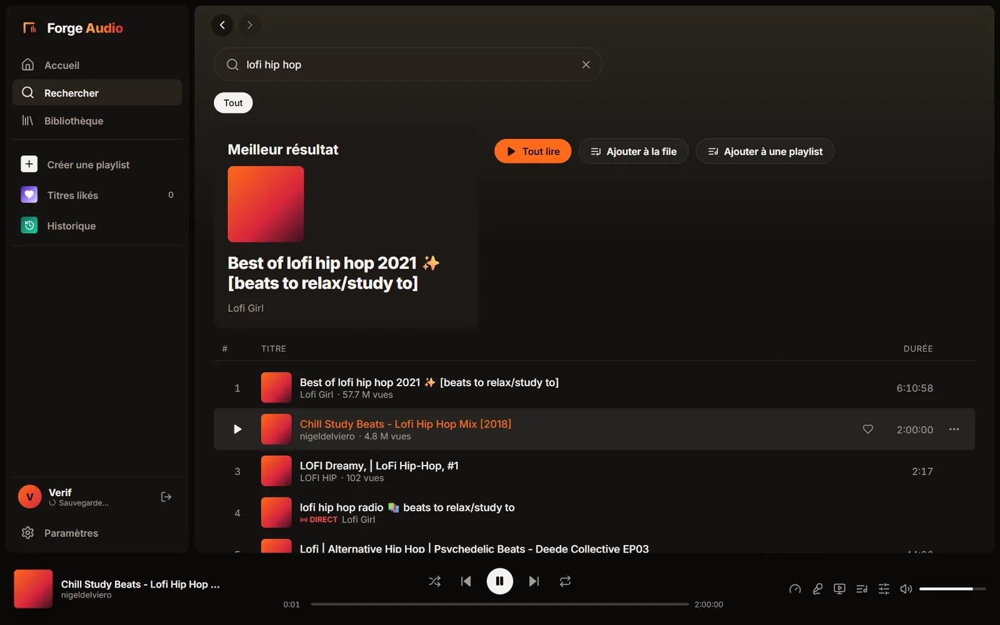
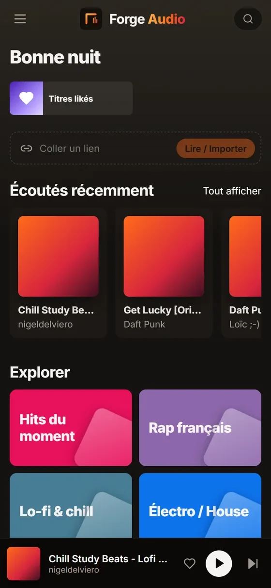
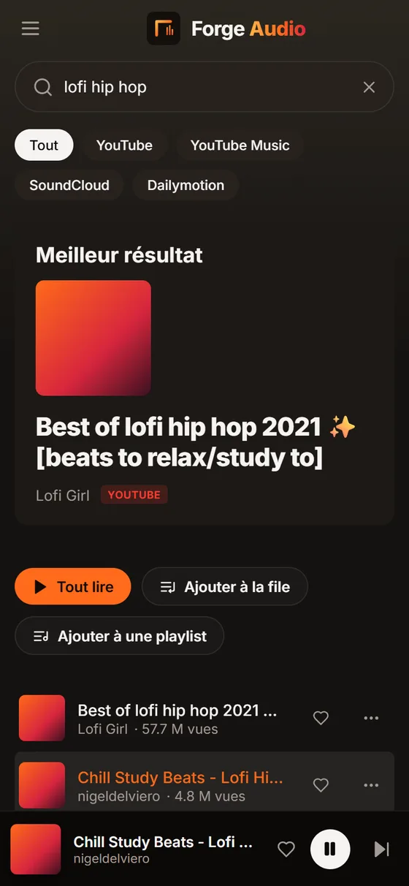

Votre musique,
sans pub.
Forge Audio puise dans YouTube, SoundCloud, Dailymotion et plus de mille sites, lit vos liens Spotify, Deezer et Apple Music, et garde vos playlists synchronisées sur tous vos appareils. Aucune publicité, aucune coupure.
Lecteur privé : l'accès se fait avec un compte fourni sur invitation.


Tout ce qu'il faut. Rien de trop.
Un lecteur complet qui se fait oublier : cherchez, collez un lien, écoutez.
Recherche multi-sources
YouTube, YouTube Music, SoundCloud et Dailymotion d'un coup, avec suggestions et genres à explorer.
Collez un lien
Un titre ou une playlist entière de Spotify, Deezer, Apple Music, YouTube ou SoundCloud, importée en un clic.
Vidéo synchronisée
Le clip jusqu'en 1080p sans couper le son : plein écran, lecteur réduit flottant ou image dans l'image.
Paroles synchronisées
Les paroles défilent avec la musique ; touchez une ligne pour y aller.
Égaliseur 10 bandes
Dix préréglages, visualiseur, vitesse de 0,5× à 2×, minuteur de sommeil. Le son reste intact si vous n'y touchez pas.
Sauvegarde automatique
Playlists, titres likés, historique et file d'attente retrouvés sur chaque appareil où vous vous connectez.
Radio automatique
En fin de file, la lecture enchaîne sur des titres similaires.
Téléchargements
MP3 320 kbit/s avec tags, audio d'origine ou vidéo MP4.
Raccourcis et touches média
Clavier, touches multimédia, écran de verrouillage, casque et Bluetooth.

La musique continue,
écran éteint.
Un navigateur fermé arrête forcément la musique. Les applications, elles, continuent en arrière-plan.
- Android et iPhone : écran verrouillé ou dans une autre application, avec la notification (pochette, précédent, lecture, suivant).
- Casque, Bluetooth et écran de verrouillage : les commandes fonctionnent partout.
- Windows, macOS et Linux : fermer la fenêtre garde la musique dans la zone de notification.
- Même compte partout : vos playlists vous suivent du téléphone à l'ordinateur.
Sur tous vos appareils.
Gratuit, sans publicité. Les applications se connectent au même lecteur avec votre compte.
Navigateur
Rien à installer : ouvrez le lecteur et connectez-vous. Installable comme application (PWA) depuis le navigateur.
Android
- Appuyez sur APK Android. Si Chrome affiche « Ce fichier peut être dangereux », appuyez sur Télécharger quand même : sans cela, le téléchargement reste bloqué à 100 %.
- Ouvrez le fichier, autorisez l'installation depuis votre navigateur, puis Installer.
- Acceptez les notifications : ce sont elles qui gardent la musique en arrière-plan.
iPhone / iPad
Installez le fichier IPA avec Sideloadly ou AltStore (gratuit, avec un identifiant Apple), ou ajoutez le lecteur à l'écran d'accueil depuis Safari.
Windows
Installeur classique, ou version portable : un seul fichier, aucune installation.
macOS
Apple Silicon (M1 et plus) ou Intel. Au premier lancement : clic droit sur l'application, puis Ouvrir.
Questions
Comment obtenir un compte ?
Le lecteur est privé : les comptes sont créés par l'administrateur et remis sur invitation. Il n'y a pas d'inscription publique.
Est-ce vraiment sans publicité ?
Oui. Forge Audio lit directement le son des sources, sans les publicités des sites d'origine, et n'affiche aucune publicité de son côté. Aucun outil de mesure d'audience n'est utilisé.
Mes playlists sont-elles sauvegardées ?
Oui, automatiquement sur le serveur, pour chaque compte : playlists, titres likés, historique, file d'attente et réglages. Aucune musique n'est stockée sur le serveur ; les fichiers locaux que vous ouvrez sont lus par votre appareil et ne sont jamais envoyés.
Pourquoi la musique s'arrête quand je ferme le navigateur ?
Une page fermée n'existe plus, elle ne peut plus jouer. Utilisez l'application Android, iPhone ou de bureau : elles continuent en arrière-plan.
L'application Android demande une adresse de serveur
Elle est déjà remplie : https://connect.forgeaudio.heiphaistos.org. Appuyez sur Continuer puis connectez-vous. On peut la changer plus tard dans Paramètres, section Application mobile.
Le téléchargement de l'APK reste bloqué à 100 %
Chrome attend votre confirmation : il affiche « Ce fichier peut être dangereux » (ou une alerte dans la barre de téléchargement). Appuyez sur Télécharger quand même. C'est l'avertissement habituel pour toute application qui ne vient pas du Play Store. Si le message n'apparaît plus, ouvrez le menu de Chrome puis Téléchargements.
Mettre à jour ou désinstaller l'application Android
Mise à jour : l'application vous prévient quand une nouvelle version sort ; téléchargez-la et installez-la par-dessus, vos playlists et votre compte restent. Si vous aviez installé une version d'avant le 30 septembre 2026, désinstallez-la une fois avant d'installer la nouvelle. Désinstaller : appui long sur l'icône Forge Audio, puis Désinstaller (ou Paramètres, Applications, Forge Audio).
Le code est-il ouvert ?
Oui, sous licence MIT : lecteur et applications de bureau, applications mobiles.